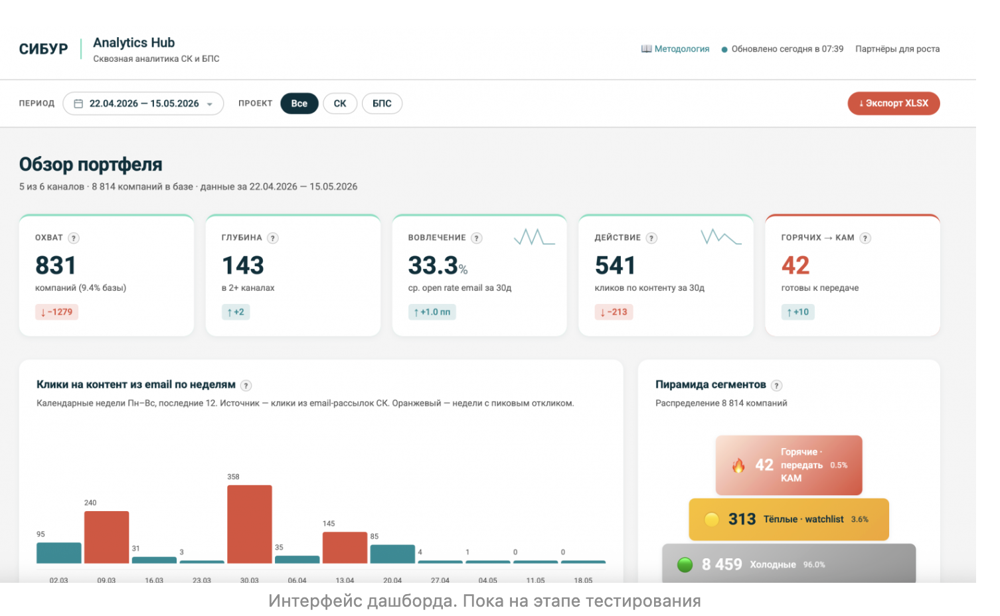
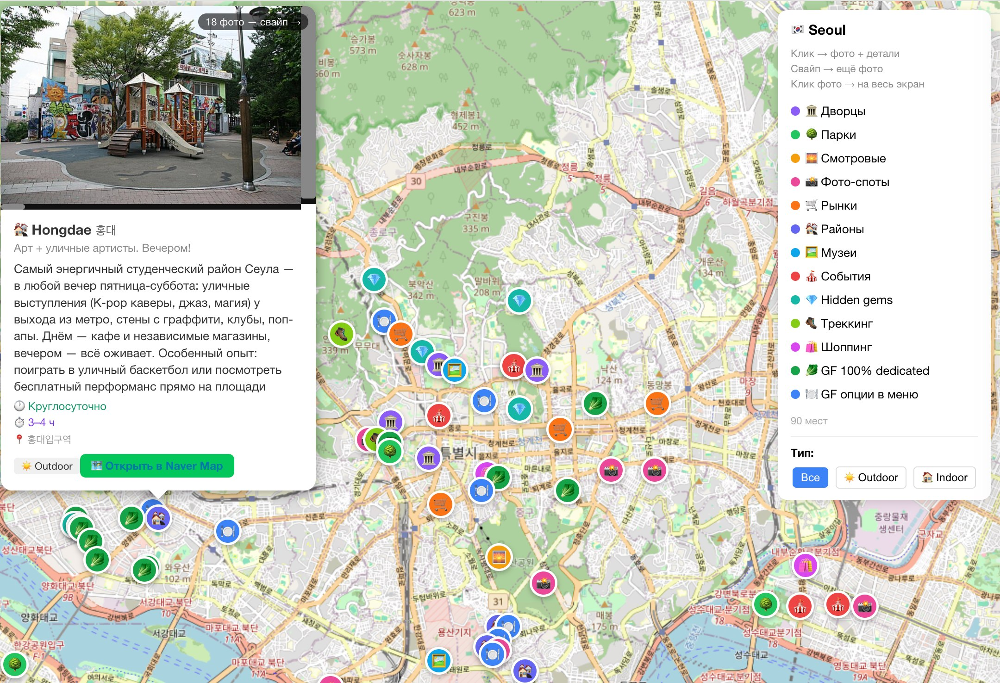
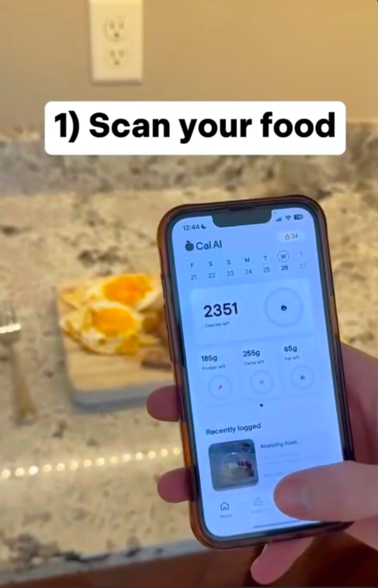

Вводное занятие
Ставим Codex или Claude Code, разбираемся в интерфейсе и делаем первую задачу.
Финальный урок от 15.06.2026: коротко повторяем базу, разбираем вопросы и выбираем, где применять вайбкодинг дальше.
Ставим Codex или Claude Code, разбираемся в интерфейсе и делаем первую задачу.
Собираем Chrome-расширение и смотрим, как агент работает с файлами, контекстом и git.
Делаем одностраничный лендинг, правим через агента и публикуем его в интернете.
Собираем бота-помощника и подключаем внешние сервисы через API.
Снимаем барьер окончательно и собираем личный процесс для следующих проектов.
Нейронки будут меняться каждый день. Основа остается: проект, контекст, запрос, проверка.
Расширение, сайт, Telegram-бот и понимание, как агент работает с файлами.
Не гнаться за всеми моделями, а выбирать инструмент под свою задачу.
Взять один свой кейс и собрать маленький полезный инструмент.
Короткий словарь по курсу. Нужен, чтобы не терять базу после выпуска.
Работа с AI-агентом, который меняет файлы проекта.
Нейронка с доступом к папке, терминалу и проверкам.
Память текущей сессии. Чем больше шума, тем хуже качество.
Задача для агента: цель, вводные, ограничения и критерий готовности.
Единица текста для модели. В боте токен может быть секретным ключом.
Официальная дверь сервиса для программы.
Слой поверх API, чтобы агент мог работать с сервисом удобнее.
Локальный файл для секретов, которые нельзя коммитить.
История версий проекта на компьютере.
Контрольная точка, к которой можно вернуться.
Удаленное хранилище кода и источник правды.
Сервер, где бот или backend работают без вашего ноутбука.
То, что видит пользователь: страница, кнопки, формы.
Логика за экраном: API, боты, базы, обработка сообщений.
Главная сессия, которая раздает задачи субагентам.
Повторяемая цепочка шагов от входа к результату.
Это рабочая гигиена: она экономит контекст, нервы и результат.
Если разговор раздулся, начните новый. Старый чат тащит лишний шум.
Перед новым окном попросите агента записать решения в Markdown.
Перед крупной правкой фиксируйте рабочее состояние проекта.
Главная сессия ставит задачи субагентам, собирает отчеты и валидирует итог.
Если сессия зашла в тупик, пусть агент сам сформулирует идеальный запрос для нового окна.
Когда проект становится полезным, ему нужно говорить с другими сервисами.
Берем ключ у BotFather и отдаём его backend-боту через .env.
Голосовое сообщение превращается в текст для дальнейшей обработки.
Быстрый AI-ответ поверх уже расшифрованного текста.
Код хранится в репозитории, сервер берет проверенную версию.
Инструменты не заменяют вкус, но быстро показывают направление.
Есть лендинг курса, навигация, уроки и квиз.
Примеры, как люди превращают вайбкодинг в результат на работе или в жизни.
Быстро собрать рабочий аналитический интерфейс и проверить гипотезу.
Использовать вайбкодинг как команду исполнителей, а финальное решение оставить человеку.

Спланировать Сеул под семью, целиакию, блогерские точки, погоду и транспорт.
Собрать проект с памятью, скиллами и проверкой актуальности данных.

Убрать ручной ввод еды и считать КБЖУ по одному фото.
Прикрутить AI API к мобильному приложению и сфокусироваться на одном сценарии.

Проверить Fable 5 на сложном фан-проекте: браузерной RPG про корованы.
Дать агенту большое ТЗ, довести до playable demo и открыть исходники на GitHub.

Дать генерацию и правку фото без сложного интерфейса.
Собрать Telegram-бота с командами для картинки, промпта, фона и улучшения фото.